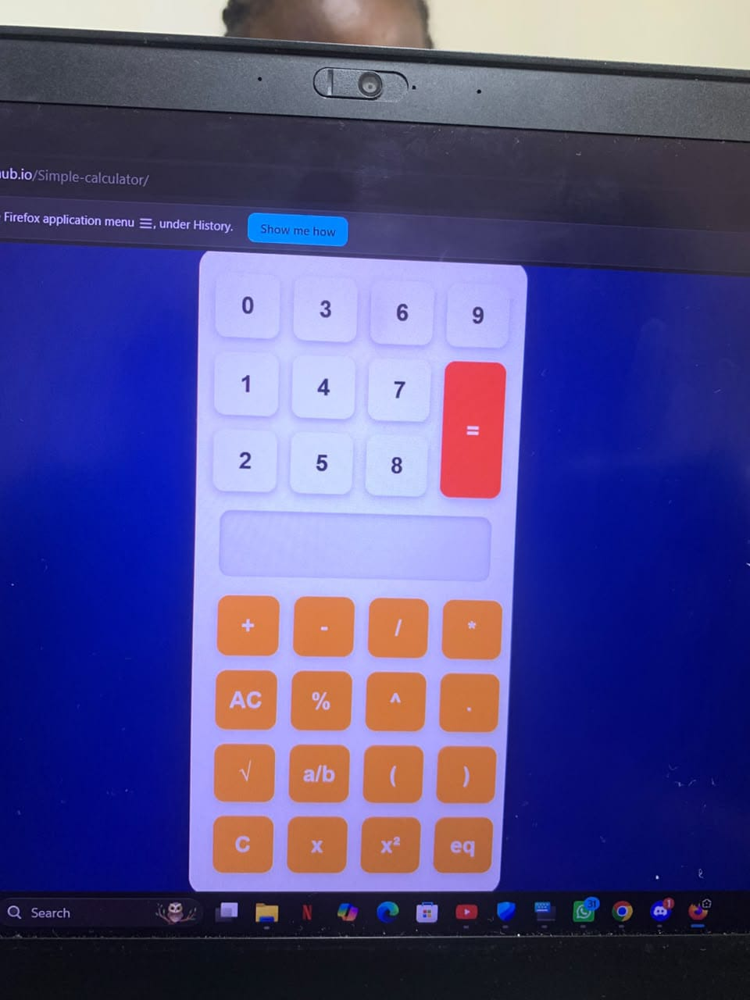

This documentation explains the design, implementation, algorithms and testing of the two mathematical features that were added to an existing scientific calculator during my internship.
During my internship, I was assigned the task of improving an existing scientific calculator application.
The calculator already supported several mathematical operations such as addition, subtraction, multiplication, division, exponentiation, square root, decimal-to-fraction conversion and modulus.
My responsibility was to extend the calculator by implementing two additional mathematical features:
Calculates the number of ways of selecting r objects from n objects without considering order.
Solves quadratic equations entered in the format ax² + bx + c eq y using the quadratic formula.
Scientific calculators provide users with the ability to perform both basic and advanced mathematical computations.
During software development, additional features can be introduced to improve the capability of an existing application.
This project focuses on the implementation of two important mathematical functions: Combination (nCr) and Quadratic Equation Solver.
Both features were implemented in JavaScript using manually designed algorithms together with HTML and CSS for the user interface.
Before enhancement, the calculator already contained the following features.

This screenshot shows the completed scientific calculator interface after implementing additional mathematical features including Combination (nCr) and Quadratic Equation Solver.
Combination is a mathematical operation used to determine the number of possible selections of r objects from a group of n objects where the order of selection does not matter.
nCr = n! / (r! (n-r)!)
Calculate:
5C2
n = 5
r = 2
5C2 = 5! / (2! x 3!)
5C2 = 120 / (2 x 6)
Answer = 10
The quadratic equation solver is used to solve equations in the form:
The calculator converts the equation into standard quadratic form:
x₁ = (-b + √D) / 2a
x₂ = (-b - √D) / 2a
Where:
D = b² - 4ac
2x²-4x+5eq1
Convert:
2x²-4x+4=0
a = 2
b = -4
c = 4
D = (-4)² - 4(2)(4)
D = -16
Result: No Real Roots
Testing was carried out to verify that the implemented features produce correct results for different inputs.
| Feature | Input | Expected Output | Actual Output | Status |
|---|---|---|---|---|
| Combination | 5C2 | 10 | 10 | Passed |
| Combination | 6C3 | 20 | 20 | Passed |
| Quadratic Equation | x²+5x+6eq0 | x1=-2, x2=-3 | x1=-2, x2=-3 | Passed |
| Quadratic Equation | 2x²-4x+5eq1 | No Real Roots | No Real Roots | Passed |
Reading an equation entered in the format ax²+bx+ceqy and extracting the values of a, b and c was one of the main challenges.
The calculator needed to handle invalid inputs and prevent incorrect calculations.
The algorithms were implemented manually without relying on external mathematical libraries.
This internship task involved enhancing an existing scientific calculator by adding Combination (nCr) and Quadratic Equation Solver features.
The features were implemented using JavaScript algorithms without depending on external libraries. The completed functions were tested using different inputs to ensure accurate results.